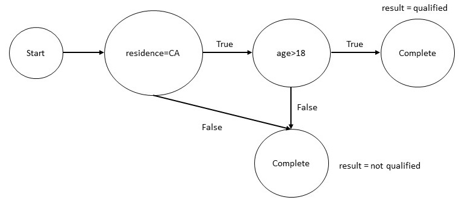
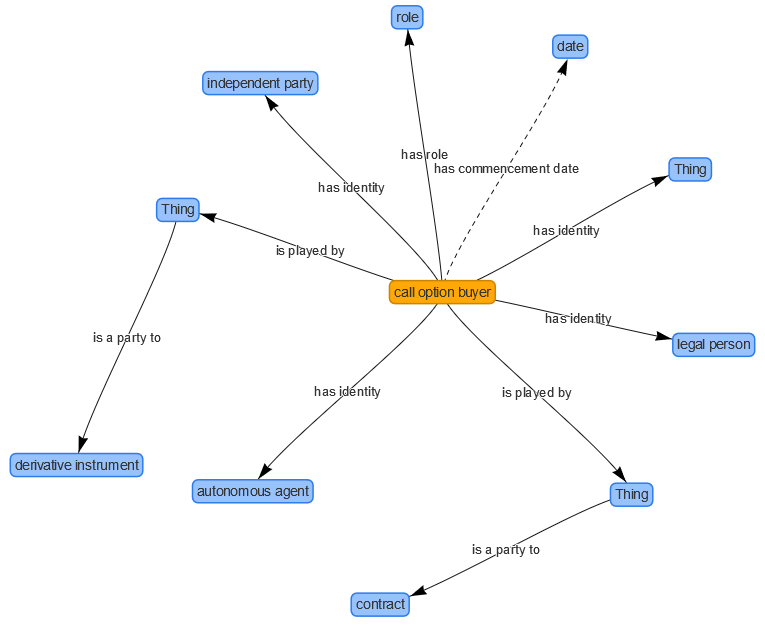

1. Introduction
Knowledge graphs are being used for a wide range of applications
from space, journalism, biomedicine to entertainment, network
security, and pharmaceuticals. We cannot do justice to discussing
the full range of knowledge graph applications in this short
chapter. Therefore, we have chosen the financial industry vertical
for which we will describe three different flavors of knowledge
graphs: analytics, tax calculations and financial reporting. The use
of knowledge graphs for analytics is probably the most common
usage. The use of knowledge graphs in tax calculations (or, more
generally, for financial calculations), is similar to their usage in
compilers and programming languages. Use of knowledge graphs for
exchanging reporting data is an emerging area of application that
will likely become increasingly important in the future.
2. Knowledge Graphs for Financial Analytics
Consider a large financial organization such as a bank that must deal with
millions of customers some which are companies, and some are individuals. Such
organizations routinely face questions that can be instantiated from
the following templates.
- If a company goes into financial trouble, which of our clients are its suppliers and vendors? Are any of those applying for a loan? How much of their business depends on that company?
- In a supply chain network, is there a single company that connects a group of companies?
- Which startups have attracted the most influential investors?
- Which group of investors tend to co-invest?
- Which companies are most similar to a given company ?
- Which company might be a good future client for us?
To answer the first question above, we need data about suppliers
and vendors of a company. Such data are usually available through
third party data providers and must be purchased. The external data
about the suppliers and the vendors must be combined with a company's
internal data. Doing so leverages the techniques of schema mapping
and entity linking that we considered in Chapter 4 for creating a
knowledge graph from structured data. Increasingly, institutions are
starting to leverage data from the daily news for market intelligence.
To leverage the financial news, we will need to extract information
from the text using the entity extraction and relation extraction
techniques described in Chapter 5. Once a knowledge graph is built, we
can use path finding algorithms considered in Chapter 6 to answer this
query. Assuming our knowledge graph represents the supplier and vendor
relationships between the companies, the traversal algorithms need
traverse those relationships to answer the query. The query results
may benefit if we use a simple visualization of the supply chain. To
answer the second question, we can leverage the centrality detection
techniques. In particular, the betweenness centrality is one possible
approach for identifying the company that plays a central role in a
supply chain.
The third question above is clearly relevant to the valuation of a
startup. Just as in the first question, the answer requires getting
data about investments from a third-party provider, and integrating it
with the internal customer data. Answering the query requires using
centrality detection techniques that we considered in Chapter 6. In
particular, the graph adaptation of the page rank algorithm is an
appropriate technique for answering this question. The answer
presentation will benefit by showing a graphical visualization of how
the influential investors are connected to various startups they are
involved in. The fourth question is an example of community
detection. In a knowledge graph that captures the investment
relationships, the investors who co-invest in a company often will
form a community.
The fifth and sixth questions are examples of reasoning techniques
based on graph embeddings that were briefly introduced in chapter
1. Fifth question can be answered using techniques for calculating
similarity based on the embedding vectors for the nodes of
interest. Sixth question is an instance of the link prediction
problem in a graph which is very similar to the problem addressed in
language models. Here, instead of predicting the next word, we are
interested in predicting the most likely links from a given node.
3. Knowledge Graphs for Income Tax Calculations
The income tax law in United States consists of more than 80,000
pages of text. Every year, more than 150 million income tax returns
are filed. The US tax law includes thousands of forms and
instructions that can appear in an income tax return. The requirements
change every year, and sometimes, can even change in the middle of a
tax filing year. With the advent of the income tax preparation
software, this difficult to understand body of law has been made
accessible to end-users so that they can prepare and file their income
tax return on their own.
Some income tax preparation tools represent the income tax law
using a set of rules. Once the law is represented as rules, it can not
only be used for calculations, but also for generating user dialogs,
providing explanations, checking completeness of input, etc. While
the calculation of income tax requires rule-based reasoning similar to
what we considered in Chapter 6, but many of the supporting operations
such as generating user dialogs, determining the effect of changing a
rule to the rest of the system, are achieved by modeling the rules as
graphs, and using graph-based algorithms to perform those
computations. To illustrate such use of the knowledge graphs,
consider the following rule from the income tax law.
A person is qualified for a tax benefit if:
- the person is a resident of California, and
- the age of the person is greater than 18 years.
We can express this rule as a Datalog rule as shown below.
|
qualified_for_tax_benefit(P) :- |
| resident_of(P,CA) & age(P,N) & min(N,18,18)
|
Given the rule above, we can construct a knowledge graph shown below.

If we are preparing the tax return for a person whose age is 17
years, through a reachability analysis on the above graph, we can
determine that in all cases, the person will not be qualified, and
hence it is not even necessary to determine their residence. The above
example is small as it involves only a single rule. But, as stated
earlier, thousands of rules are applicable to a person, and in
practice, such analysis needs to be performed on a very large and
complex graph.
3. Knowledge Graphs for Financial Reporting
The financial institutions are required to report the derivative
contracts that they currently hold. The examples of such contracts
include interest rate and commodity swaps, options, futures and
forwards, and various asset-backed securities. Such reports are of
interest to the compliance teams within an organization, brokers and
dealers who need to understand and manage such portfolios, and
regulators who need to analyze and oversee these markets. If each
financial institution provides such reports in a different format, it
becomes challenging for these diverse set of stakeholders to process,
aggregate and make sense of these reports. This problem is a classic
instance of the data integration problem that knowledge graphs are
meant to address.
An industry-wide initiative to address this problem has taken the
approach of defining a common semantic model, called, Financial
Industry Business Ontology (FIBO). FIBO is defined using a formal
language called Web Ontology Language (OWL). FIBO defines things
that are of interest in financial business applications and the ways
those things can relate to one another. In this way, FIBO can
give meaning to any data (e.g., spreadsheets, relational databases,
XML documents) that describe the business of finance. FIBO concepts
have been developed by a community of users coming from multiple
financial institutions and represent a consensus of the common
concepts as understood in the industry and as reflected in industry
data models and message standards.
FIBO provides the concepts and terminology required for reporting
on derivatives. To help users in getting started with FIBO, the developers
have provided examples to get started with modeling basic concepts such
as a Company, its global legal identifier, the derivatives, etc.
For example, FIBO defines that a Derivatives Contract could have has part
one or more Options. An Option can have a call option buyer. We show
below a graphical view of connections from a call option buyer to related
entities in the diagram below.

The graph shown above is an ontology graph in the sense that it
does not capture the relationship between data values but the
relationships that exist at the schema level. For example, it
captures that a call option buyer has to be an independent party, a
legal person and an autonomous agent. When a financial institution
uses the terms and definitions from FIBO for the financial reports
it generates, it provides the foundation for integrating its reports
with reports coming from other providers. Use of FIBO can lead to
significant streamlining and reduction of costs in aggregating and
understanding the information about derivatives contract.
The development of FIBO is being driven by a set of motivating use
cases. Derivatives contracts are only one of the several use cases
under consideration. Other use cases include counter party
exposure, index analysis for ETF development, and exchange
instrument data offering.
4. Summary
Knowledge graphs have wide-ranging applications across multiple
industries. In this chapter, we chose to focus on three different uses
of knowledge graphs in financial industry: analytics, calculations and
reporting. Use of knowledge graph for analytics is the most
mainstream and wide-spread use of knowledge graphs as it has the
potential to offer novel insights into data that an organization may
already have. Use of knowledge graph for computations has been around
for quite some time as it is similar to the use of graphs in compilers
and rule engines for various reasoning and analysis tasks. Finally,
the use of ontologies in data exchange is an emerging area for
knowledge graphs with tremendous potential that will be increasingly
important and mainstream in the future.
|
 CS520
CS520